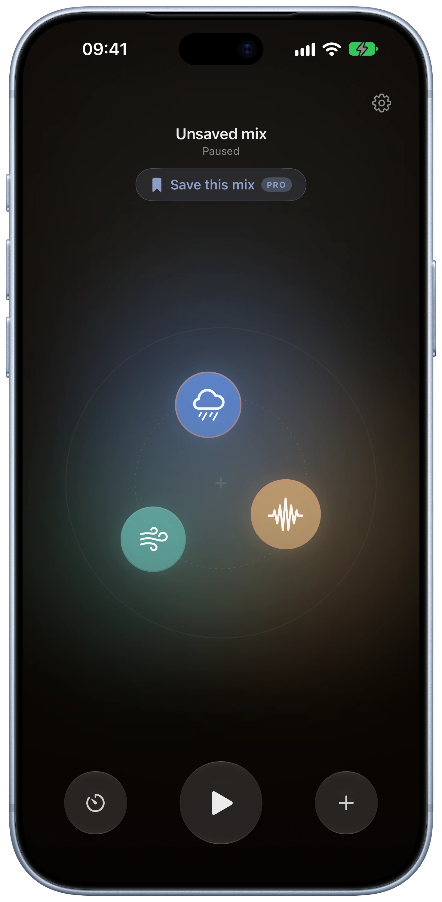
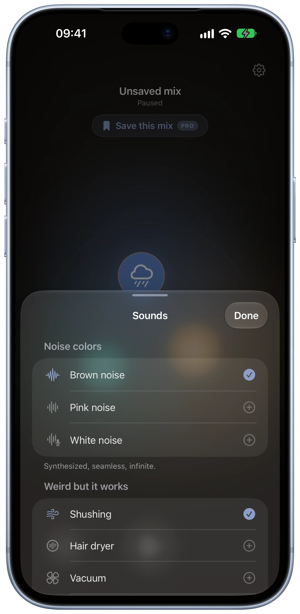
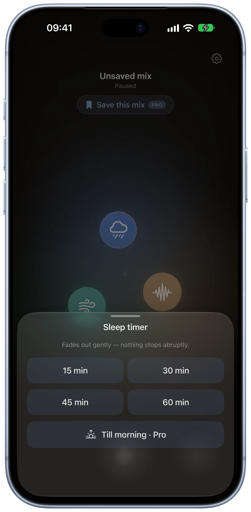

A sleep app you can use half-asleep.
Tysha is white noise for the 3 a.m. shift — real-time sound for settling a baby, designed to be run one-handed, in the dark, by someone who is exhausted and out of patience.

The design brief was a moment: 3 a.m., one hand, a crying baby, and a screen too bright.
01 — What I built and how I used AI
No AI in the product. A lot of AI in building it.
Tysha has no model inside it: it is a real-time audio app that has to work offline, in under a second, at 3 a.m. That makes it the clearer proof of AI-assisted building — what the tools helped ship is a native audio app, not a chat feature.
- My responsibility
- Product definition, UX and UI, the sound library and its copy, the iOS codebase and the real-time audio engine, Siri and Lock Screen control, testing on device, and the App Store release.
- Implementation
- Native iOS app, released on the App Store. Sound is synthesized in real time on the device — white, pink and brown noise and the rest of the library — rather than played from looped files, so it never repeats and needs no connection. No accounts, no ads, no sign-up.
- AI-assisted development
- AI coding tools wrote the first implementations of the mixer, the saved “Rooms”, the fading timer and the Siri / Lock Screen controls from my flows; I iterated on the running app against the 3 a.m. brief.
- My review and decisions
- Synthesis over looping; offline-first with no account; what the sound categories are called and how they reassure; the size of every tap target; reviewing, changing and testing generated code; when it was good enough to submit.
- Release status
- Released on the App Store, 2026 → present; 5.0 App Store rating at the time of writing. View on the App Store
One build loop, start to finish
- Rough flow. One screen: a near-black canvas, floating sound nodes you tap in and out, one big play button under the thumb.
- AI-generated first implementation. AI coding tools produced the first mixer from that sketch — nodes, a play control and audio playback — running on my phone the same day.
- What I decided. The decisions that made it Tysha rather than a generic sound app: real-time synthesis instead of looped files, tap-to-blend nodes instead of precise sliders, a warm near-black surface that does not light up a nursery, and no account or ads anywhere.
- Working result. Sound on the first tap (the brief was under a second from opening), mixes saved as Rooms, started from Siri or the Lock Screen, and faded out by a timer — with the phone face-down on the nightstand.
A limitation I designed around: looped audio files have a seam. A parent put it exactly: “the repeat wakes me before it wakes the baby.” Rather than hide the seam behind a longer loop, Tysha synthesizes its sound in real time on the device, which removes the seam entirely and, as a side effect, removes the need for downloads or a connection.
Why this app, and what the tooling did and did not change: I shipped two iOS apps solo.
02 — The problem
The context is hostile. The app has to be kind.
A parent reaching for a white-noise app at 3 a.m. is half-asleep, holding a baby with one arm, in a dark room, with zero patience. Most apps meet that moment with the opposite: sign-in walls, ads, audible looping tracks, buried controls, and a screen that lights up the whole nursery.
So the problem wasn’t “make white noise.” It was design for the worst moment of the day — and get out of the way fast enough that the parent can put the phone down and the baby can settle.
03 — Product thinking
Three principles, all pointed at calm.
One hand, half-asleep
Every core action lives within a thumb’s reach and works on the first tap. No hunting, no reading, no precision required.
Generated, never looped
Sound is synthesized in real time — seamless and infinite, with no audible repeat — and it keeps working with no internet at all.
Calm by subtraction
No accounts, no ads, no sign-up. Fewer choices and less chrome mean faster relief and nothing to distract at the worst hour.
04 — Who it’s for
The people at the crib.
Personas grounded in Tysha’s audience — and the insights that shaped the app.
The new parent
0–6 months in, chronically sleep-deprived, often one-handed. Has no patience for setup and won’t remember a password. Success = sound playing within a second of opening.
The light-sleeping partner
Cares that it runs all night, fades gently, and never interrupts with an ad or a reconnect. Values privacy and offline reliability over features.
- “
A parent’s own words on looping tracks: “the repeat wakes me before it wakes the baby.”
- “
The most-wanted sounds weren’t “nature” — they were hair dryers, vacuums, the womb and brown noise.
- “
Every second of setup at 3 a.m. is a second of crying — so the target is sound playing in under a second.
05 — Key UX & UI decisions
Designing for the dark.
Sounds you blend by touch
The home is a calm, near-black canvas with floating sound nodes you tap to bring in and out, and one big play button anchored where a thumb naturally rests. Mixing is physical and forgiving — no sliders to land precisely, no menus to read.

A sound list that speaks parent, not engineer
Sounds are grouped the way tired parents actually think — “weird but it works” (hair dryer, vacuum, washing machine), “womb & body,” “nature, no surprises” — each with a reassuring one-line caption. It’s a synthesized library that’s seamless, infinite and free.

Save the mix, fade it out, put the phone down
A working mix can be saved as a “Room,” started with Siri or the Lock Screen, and handed a gentle fading sleep timer — so the whole interaction can end with the phone face-down on the nightstand and the baby drifting off.

06 — Design system
Warm, quiet, and built for the dark.
The app lives on a deep, warm near-black so it never lights up a nursery, with a single amber glow to guide the eye and oversized, rounded tap targets that forgive shaky, half-asleep aim. The voice is gentle and a little witty — reassurance, never instruction.
Component language
- Sound nodes
- Big play control
- Saved “Rooms”
- Fading timer
- Categorized picker
- Reassuring captions
- Lock-Screen / Siri
- Offline-first
Large targets, minimal chrome and one accent kept the whole app legible at a glance — and made it possible to design and build it solo without the system fragmenting.
07 — Outcomes
What shipped.
Live on the App Store — a few honest markers of what it is.
08 — More